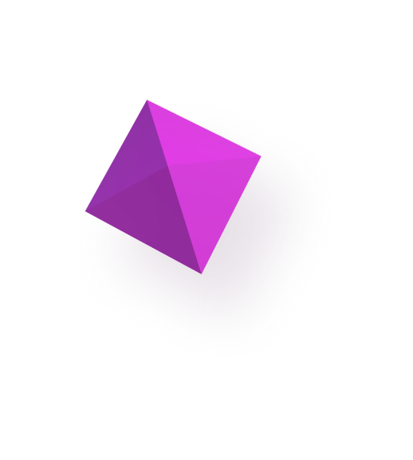
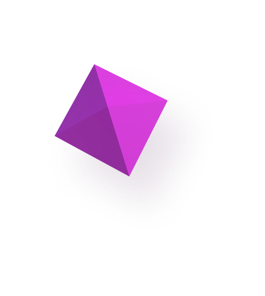

Desarrolladora Web Full-Stack
Resolver problemas de diseño, crear interfaces
de usuario inteligentes e interacciones útiles, desarrollar aplicaciones
web enriquecidas y experiencias web fluidas.
About me >

 



Resolver problemas de diseño, crear interfaces
de usuario inteligentes e interacciones útiles, desarrollar aplicaciones
web enriquecidas y experiencias web fluidas.
Front End Developer / JavaScript Fan /
Wordpress Expert
Professionally connected with the web development industry.
Problem solver, well-organised person, loyal employee with high attention to detail.
Fan of Boxing, outdoor activities, video games, and coding of course.
Interested in the entire frontend spectrum and working on ambitious projects with
interesting people.

He construido varios proyectos diferentes para adaptarse a diferentes aspectos del negocio del cliente. Si quieres ver más ejemplos de mi trabajo que los que se muestran en este sitio, ¡ponte en contacto conmigo!
Ver Proyectos